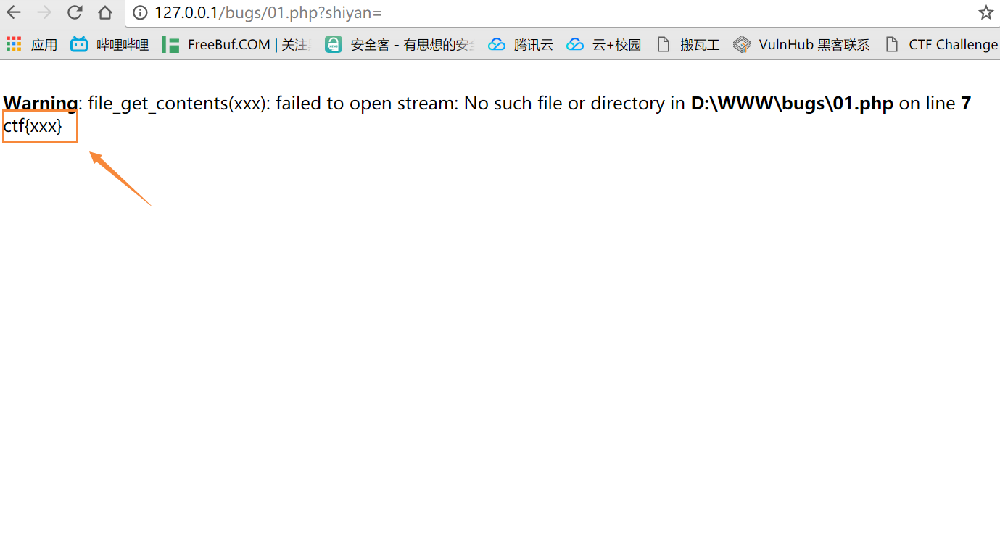
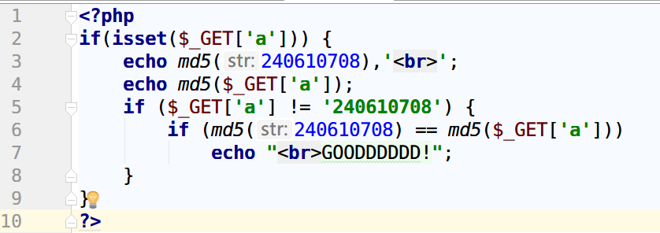
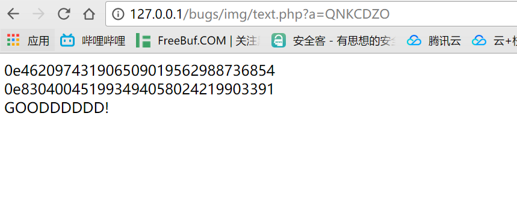
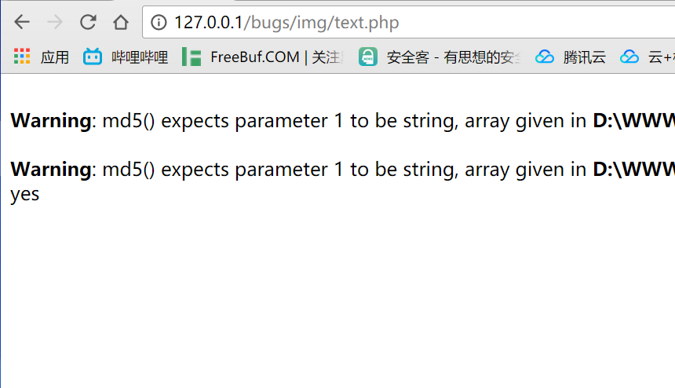

看大牛们游刃在各大cms之间挖洞，决心好好学一下php源码分析
这是一个php源码审计的项目：项目地址，可以比较系统的了解php的漏洞，每个demo也不是很难，就跟着这个项目来好好学习吧！
下面是第一个例子
0x001 01变量覆盖漏洞
1 | <?php |
这是一个比较简单的变量覆盖漏洞了，我在以前写到一半后来没继续开发下去的ctf平台里也出过这种题目。
这份源码很简单，主要有这几个函数先理解以下意思：
extract():看到一个很好的例子，贴下来，extract是展开的意思
1
2
3
4
5
6
7
8
9
10<form action="action.php" method="post">
<input type="text" name="username">
<input type="password" name="password">
<input type="submit">
<?php
extract($_POST);
//相当于$username = $_POST['username'];
//$password = $_POST['password'];
?>isset()：isset检测变量是否设置，存在不为Null的值则返回True,通俗点就是变量有没有值
- trim()：移除字符串两侧的空格等特殊字符
- file-get-contents():把整个文件读入一个字符串中
然后分析一下逻辑1
if(isset($shiyan)
第四行判断$shiyan这个参数的传入，从代码里没找到$shiyan这个变量，其实这个变量是需要我们自己构造，然后通过extract()这个函数变成php的变量
第五行先用函数file-get-contents()来读取$flag指定的文件,显然服务器里没有xxx这个文件，所以，你只要把$shiyan这个变量覆盖成空，就能echo ctf{xxx}了
所以我们只要传输给服务器类似1
http://127.0.0.1/bugs/01.php?shiyan=&
就行了

在官方wp中给的解题答案是1
http://127.0.0.1/bugs/01.php?shiyan=&flag=1
其实 get给服务器的flag是什么都无所谓，只要不存在就行了
0x002 18md5函数绕过
02题源码太长了，不适合打怪升级，一人一狗装备全靠打的套路。还是先从简单的慢慢来写把
1 | <?php |
国际惯例，先整理新出现的函数：
好像就这几个，这个代码应该是最简单的代码了吧，逻辑很清晰
- error_reporting(0):关闭所有PHP错误报告
- die():等同于 exit()
print:这个函数列出来我是想说下print print_r 和echo之间的区别：
- echo:echo可以输出多个变量
- print:只可以输出一个变量 int or string
- print_r:还可以打印例如数组变量这种类型的值
然后看源码，先是判断有没有username和password这两个值，然后判断这两个值有没有相等，相等的话就GG。如果不相等再用md5加密再比一比，比成功了输出flag
这里可能能发现一个细节，在对比username的值和password的值是否相等的时候和对比他们md5的值是否相等的时候用到了两个等号和三个等号的区别，那这两个有什么不同呢
== 是轻量级的比较运算，只看值不看类型
=== 是重量级的比较运算，既看值，也看类型，要绝对相等才会为true
举个栗子：


其实这两题还是有点相似的，我这题是先判断你输入的是不是240610708，如果不是的话把咱们输入的经过md5加密然后和MD5(240610708)进行比较，这里我传参传入的是字符串”QNKCDZO”这里我们发现这两串字符串有个相同的地方都是0e开头的。由于 PHP 是弱类型语言，在使用 == 号时，如果比较一个数字和字符串或者比较涉及到数字内容的字符串，则字符串会被转换为数值并且比较按照数值来进行。此规则也适用于 switch 语句。上述例子中的两个字符串恰好以 0e 的科学记数法开头，字符串被隐式转换为浮点数，实际上也就等效于 0×10^0 ，因此比较起来是相等的。
常见的payload
md5
QNKCDZO
240610708
s878926199a
s155964671a
s214587387a
s214587387a
sha1
sha1('aaroZmOk')
sha1('aaK1STfY')
sha1('aaO8zKZF')
sha1('aa3OFF9m')
然后我们继续回来这题，这题和上题不同的是，第一个比较使用了 == 第二个if却使用了 === 这里又要用到php的一个特性
PHP对数组进行hash计算都会得出null的空值
我们来尝试一下
1 | <?php |

屌屌哒
那这题也可以这么来
username[]=1&password[]=2
username[]和password[]的值并不影响最终结果